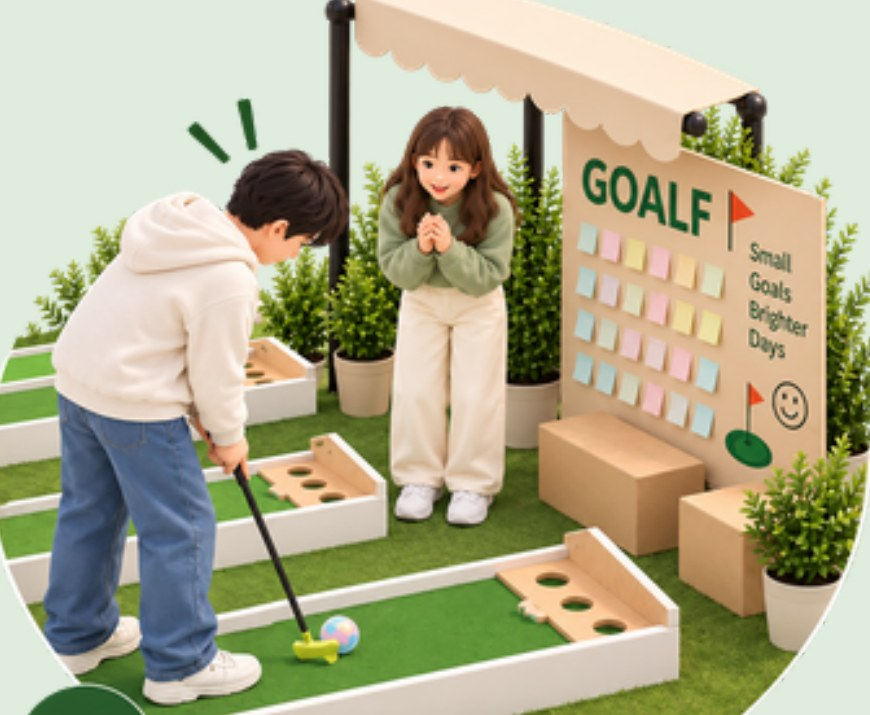
Play Together
Friends, classmates and passers-by can play the mini-golf course together and enjoy a short break in the city.
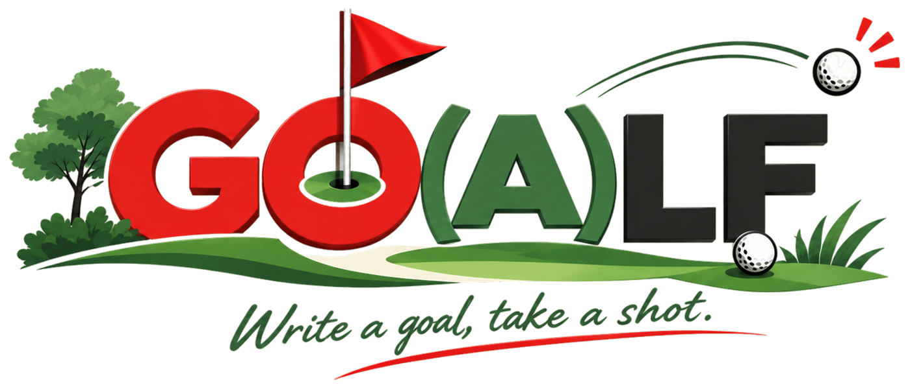
University of Utah · Urban Ecology Park(ing) Day Project · Yeonsu-gu, Songdo
A mini-golf wish capsule that turns one parking space into a place to pause, play and leave a small goal behind.
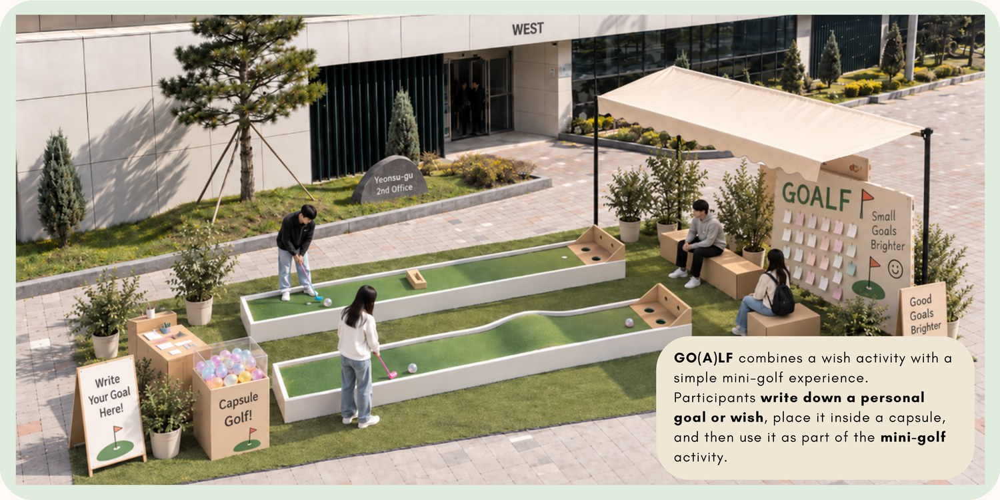
Where a car was parked, people stay instead.
Park(ing) Day started in San Francisco in 2005. The design studio Rebar paid a parking meter, rolled turf out across the space it had just rented, and let people sit there for two hours — the most the meter allowed.
The point was the rent. A city hands over a large share of its street, cheaply, so that one private car can sit still. Park(ing) Day asks what else that same ground could hold.
It became an annual event the next year and spread worldwide. Usually on the third Friday of September, parking spaces become parks, gardens, classrooms and playgrounds.
Park(ing) Day
Since 2005
San Francisco, by Rebar
GO(A)LF
15–29 Oct
Yeonsu-gu 2nd Office · 2026
GO(A)LF ran longer than a day. The course stood in front of the Yeonsu-gu 2nd Office for fourteen days, 15 to 29 October. Anyone passing wrote a wish, sealed it in a capsule and putted it down the lane — sink it in the hole and the wish comes true.
GO(A)LF combines a wish activity with a simple mini-golf experience. Participants write down a personal goal or wish, place it inside a gatchapon capsule, and then use that capsule as the ball in the mini-golf course.
The parking space stops being storage for a car and becomes a short, generous pause in the middle of the street — something to play, something to read, somewhere to sit.
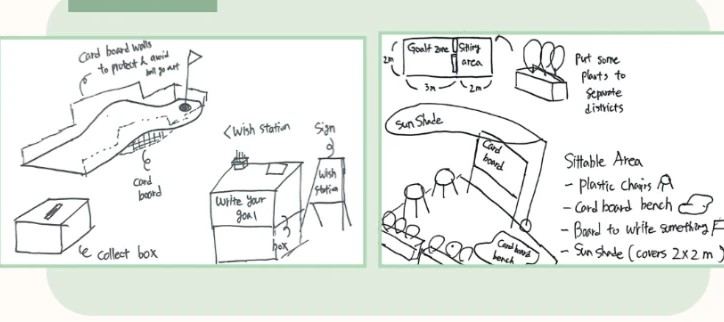
Site
Yeonsu-gu 2nd Office
West frontage, Songdo
Footprint
5 × 2 m
one parking bay
Courses
Two
3.0 × 0.5 m
Built from
Wood & plastic
wood course, plastic box seats, cardboard table top
Not the drawing — the thing itself.
The bay in Songdo became the course: a wood lane laid over artificial grass, plastic crates stacked into the seats and the table, and a canopy over the wish station.
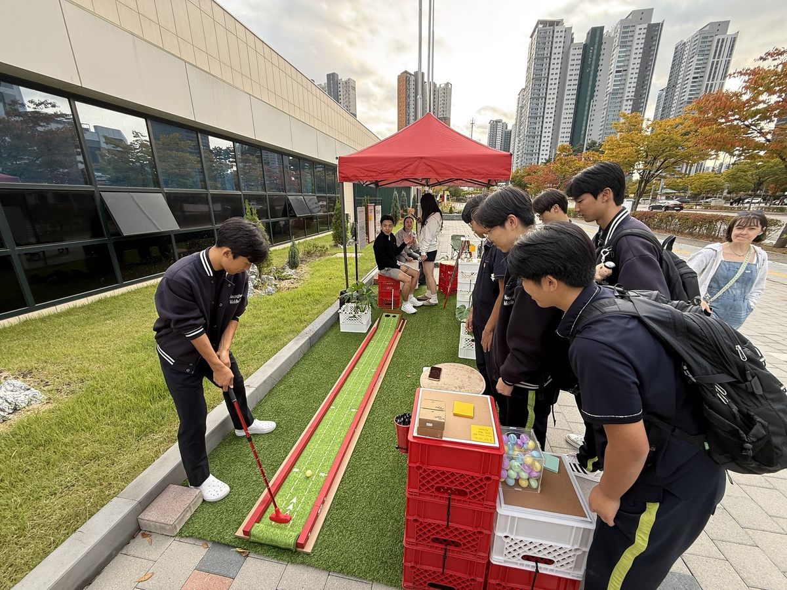
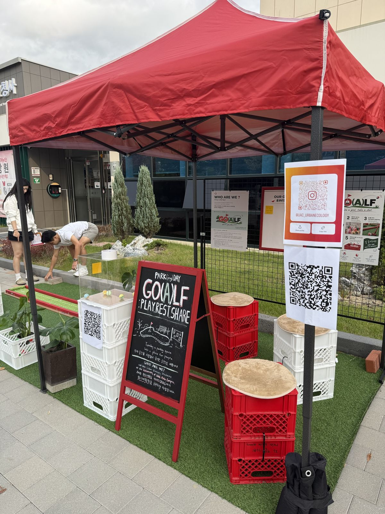
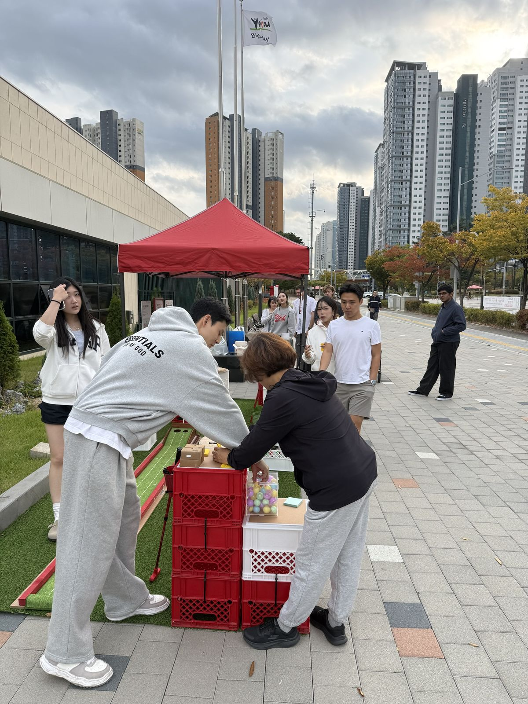
The first build did not hold.
Songdo is built on reclaimed land by the sea, and the wind runs hard down its open boulevards. Early in the run it went straight through the booth: the sign was down, the crates had shifted, the lane had come apart.
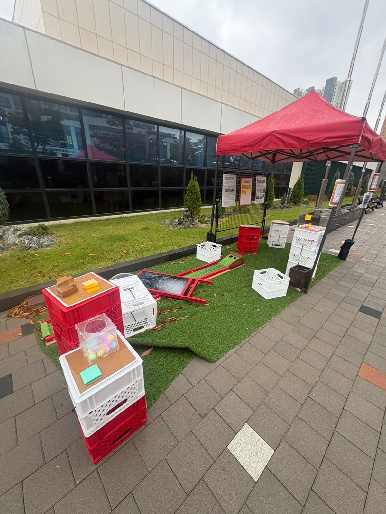
So we rebuilt it. The lane and the putting surface were straightened and laid again, side walls went onto the canopy, and a weight bag was fixed to every leg. The wish slips and the posters moved inside the walls, out of the wind.
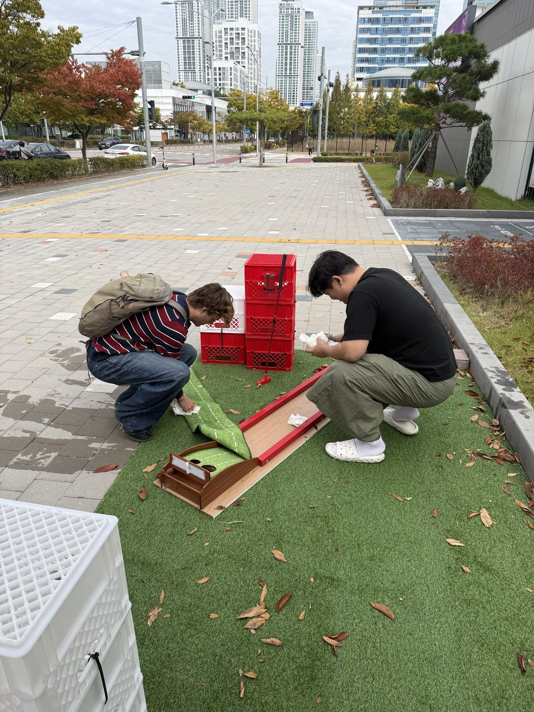
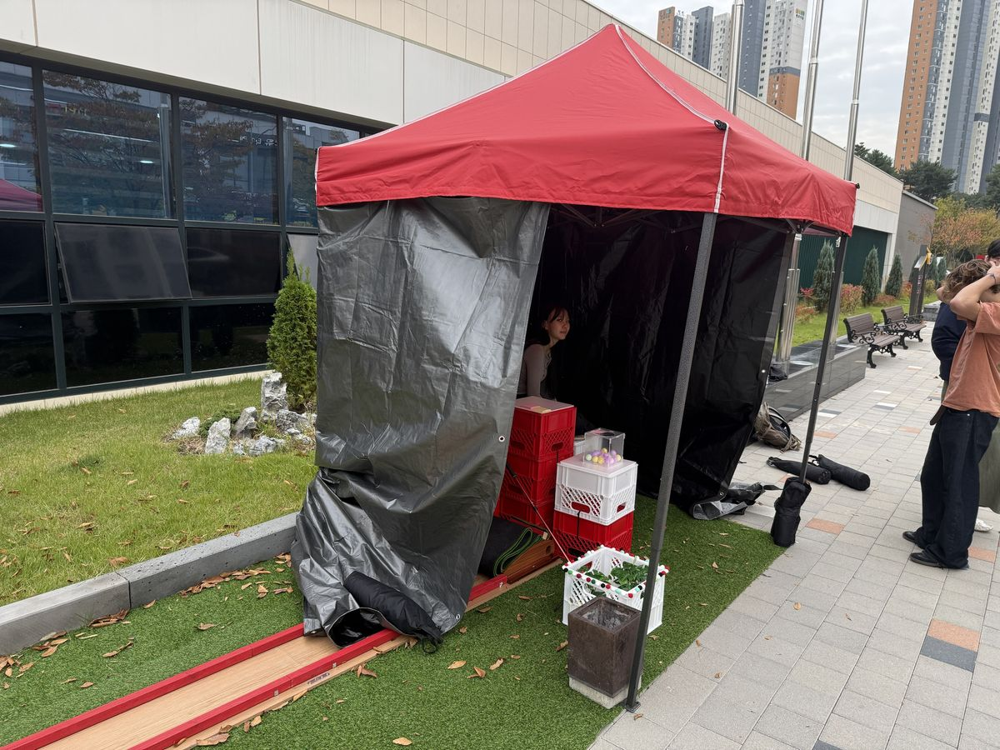
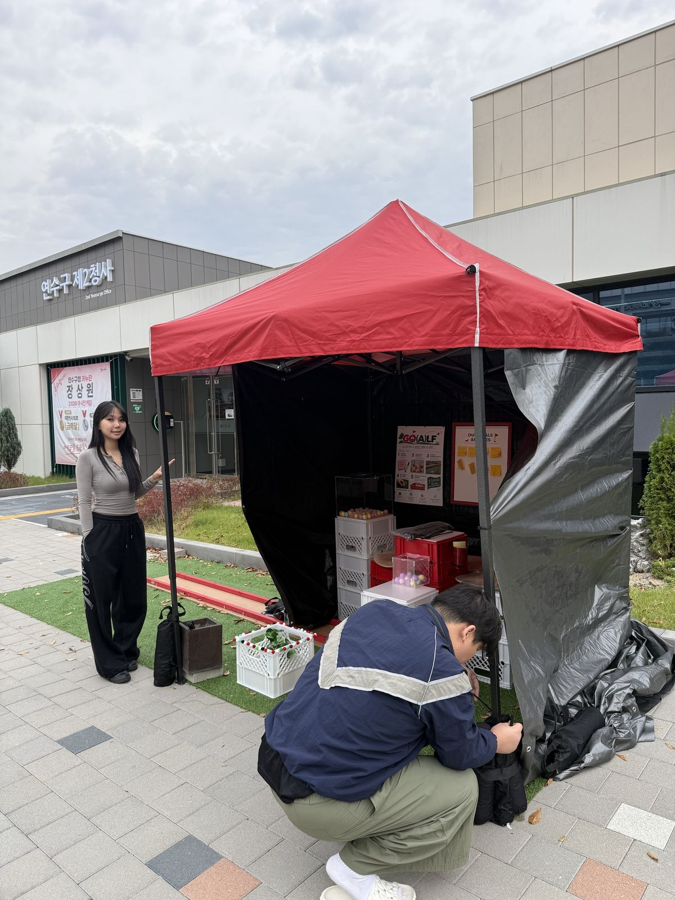
It held for the rest of the run. For a temporary structure put up quickly out of light materials, wind is a load you have to design for — which we learned by having it taken apart first.
No instructions needed — the course explains itself.
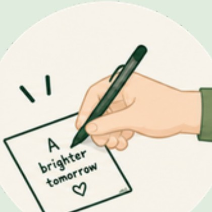
Write a personal goal or wish on a small slip at the wish station.
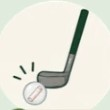
Place the note inside a gatchapon capsule and play it down the course.
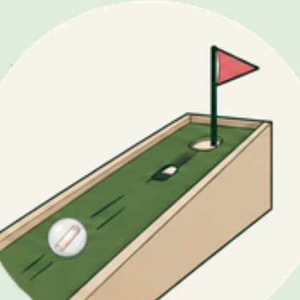
Complete the course and drop the capsule into the collection box.
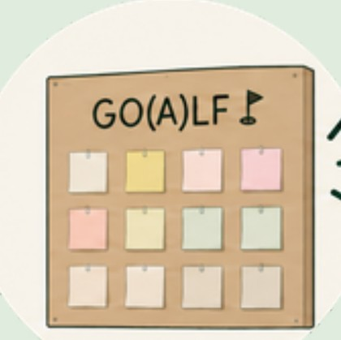
Selected wishes are displayed on the GO(A)LF board for everyone passing by.

Friends, classmates and passers-by can play the mini-golf course together and enjoy a short break in the city.
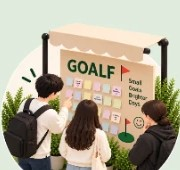
People read each other's wishes on the GO(A)LF board, find inspiration, and start conversations.
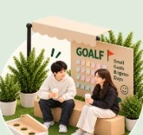
The shaded seating area offers a space to relax, chat and connect with others in a greener, friendlier street.
← swipe →
Everything fits inside a single 5 × 2 m parking bay.
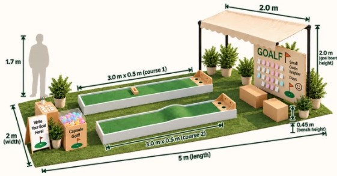
Small materials, big fun!
From an empty bay to a finished street room.
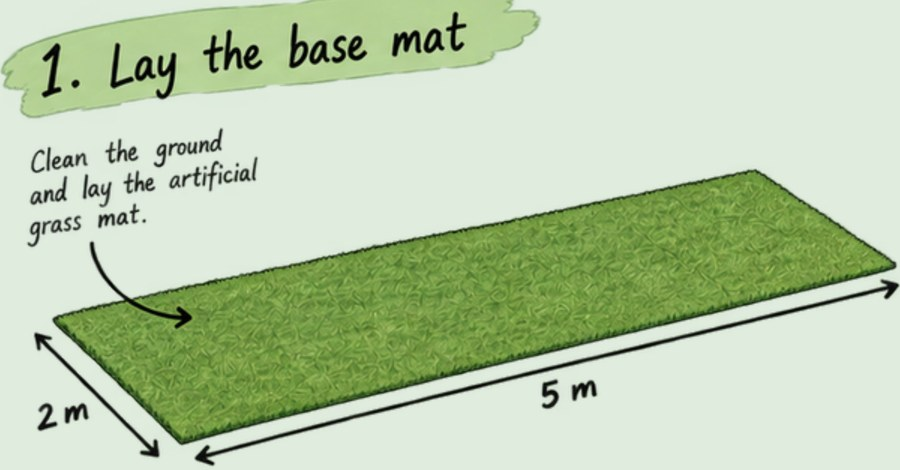
01Lay the base matClean the ground and roll out the 5 × 2 m artificial grass mat.
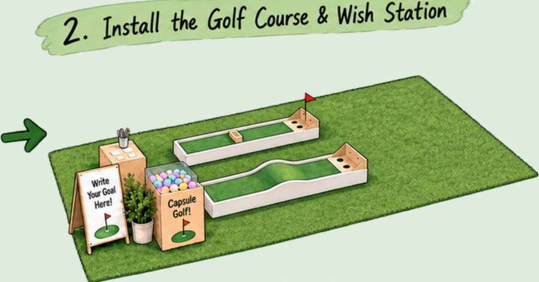
02Install the course & wish stationPlace both courses, the capsule stand and the "write your goal" desk.
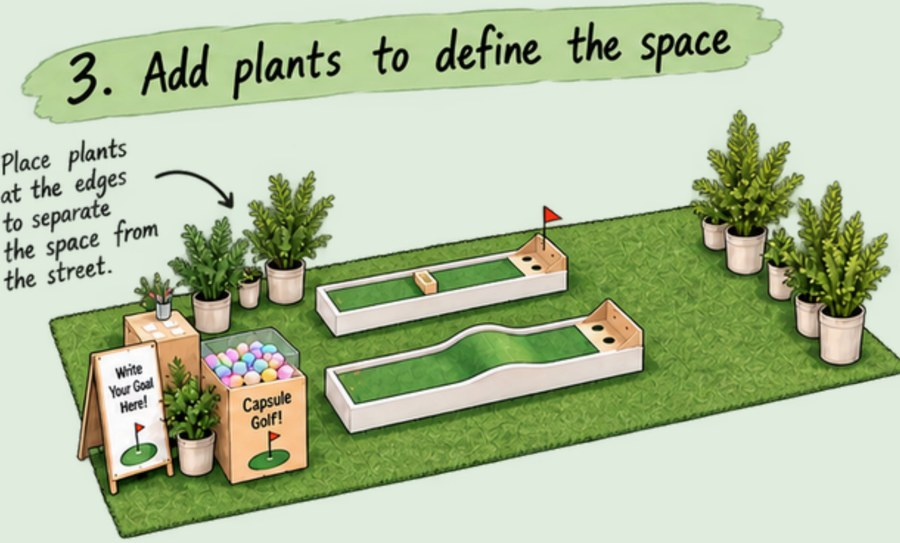
03Add plants to define the spaceSet plants along the edges to separate the room from moving traffic.
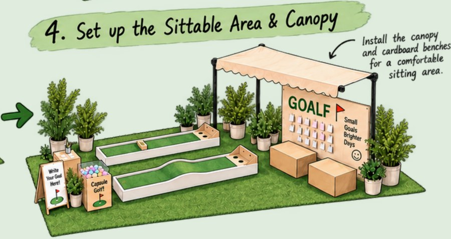
04Set up the seating & canopyInstall the canopy and the box benches for a comfortable sitting area.
The revised sheet, as submitted. Tap to open it full screen.
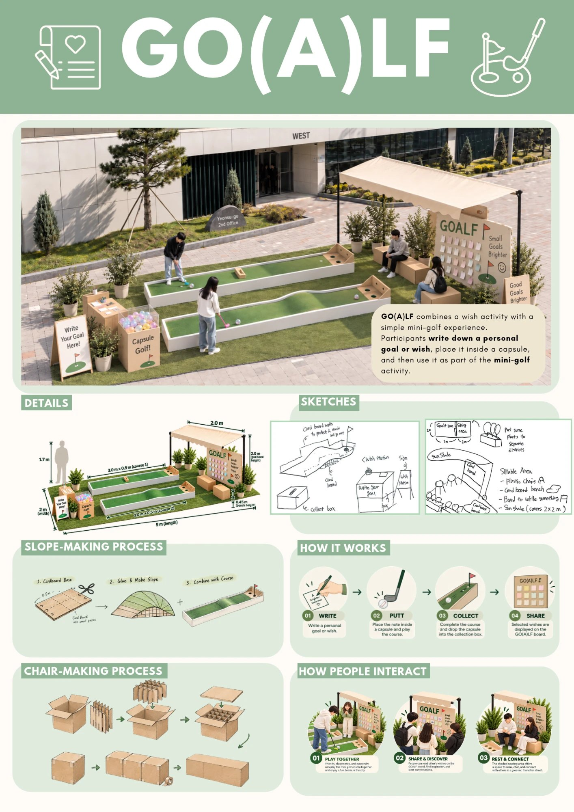
Small goals,
brighter streets.